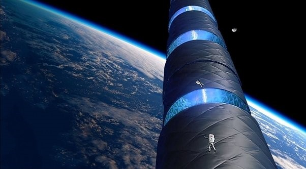

Cylindre de Tipler

Le cylindre de Tipler, également appelé cylindre infini, est une solution hypothétique de machine à voyager dans le temps proposée par le physicien Frank Tipler. L'idée consiste à prendre de la matière équivalente à 10 fois la masse du soleil et à l'enrouler dans un cylindre extrêmement long et dense. Après avoir fait tourner le cylindre à quelques milliards de tours par minute, la rotation rapide entraînerait le cylindre de Tipler dans un effet de Lense-Thirring, déformant l'espace-temps et créant des champs de courbes temporelles fermées. Un vaisseau spatial, suivant une trajectoire spécifique autour du cylindre, se retrouverait sur une courbe temporelle fermée, ce qui lui permettrait de voyager dans le passé.
Ce concept présente toutefois des limites. Cette solution de machine à voyager dans le temps ne pourrait fonctionner que si le cylindre était infiniment long ou constitué d'une matière inconnue, la matière exotique.